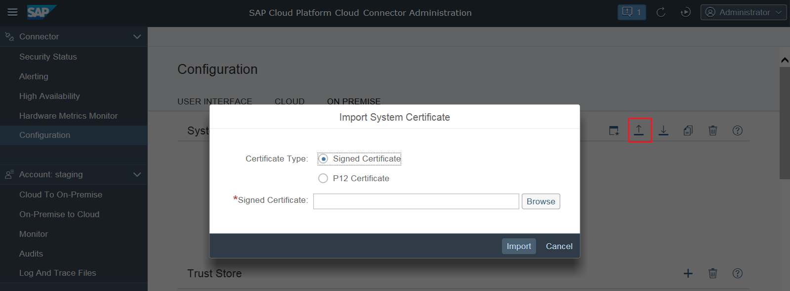
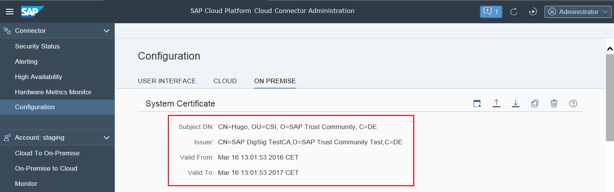

In order to setup a mutual authentication between the Cloud connector and any back-end system it connects to, you can import an X.509 client certificate into the Cloud connector. The Cloud connector will then use the so-called "system certificate" for all HTTPS requests to back-ends that request or require a client certificate. This means, that the CA, which signed the Cloud connector's client certificate, needs to be trusted by all back-end systems to which the Cloud connector is supposed to connect.
This system certificate needs to be provided as PKCS#12 file containing the client certificate, the corresponding private key and the CA root certificate that signed the client certificate (plus potentially the certificates of any intermediate CAs, if the certificate chain is longer than 2). Via the file upload dialog, this PKCS#12 file can be chosen from the file system, and its password also needs to be supplied for the import process.
As of version 2.6.0, there is a second option - starting a Certificate Signing Request procedure, similar to the UI certificate described in Exchanging UI Certificates in the Administration UI.

If a system certificate has been imported successfully, its distinguished name, the name of the issuer, and the validity dates are displayed:

If a system certificate is no longer required it can be deleted. To do this, use the respective button and confirm deletion. If you need the public key for establishing trust with a server, you can simply export the full chain via the Export button.